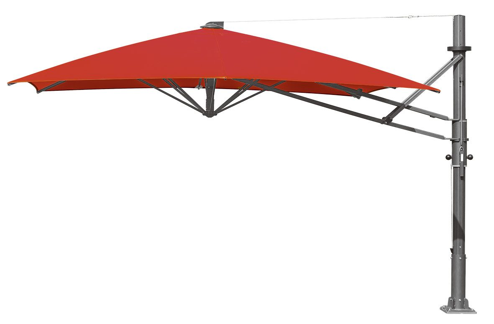

World
Side Pole Umbrella
BaHaMa社が長きにわたり錯誤を重ね開発してきた片持ちアンブレラです。 従来のJumbrellaの特徴である堅牢なフレームと強いテンションのかかった美しい直線形の天幕は変わらず維持しております。 片持ち型アンブレラであるため、アンブレラの主柱が障害物とならない、自由な家具空間を演出することが可能です。
4 Sizes
| 品番 | 総高 | 軒先 | 上代 |
|---|---|---|---|
| 3.5M×3.5M | 3190（開）/4190（閉） | 2400（開）/1480（閉） | ￥2,551,000～ |
| 4.0M×4.0M | — | 2400（開）/1200（閉） | ￥2,614,000～ |
| φ3.5M | — | 2400（開）/2180（閉） | ￥2,487,000～ |
| φ4.0M | — | 2400（開）/2000（閉） | ￥2,551,000～ |